As part of my involvement in a Master’s TER project, I created the draft scene for their final boss. It is a room containing a boss with platforms that spawn randomly from one side of the screen and move across the room to the other side, similar to some bosses in Cuphead.
The boss has five different attacks, with the choice of attack once again being random.
The main script responsible for selecting and executing the attacks is available to read
Gra is the final-year project of my third year in Computer Science. It is a scoring arcade game created using the Unity engine.
It is the most complete game I have made so far, as it is fully playable and remains installed on the arcade cabinet at FDS Montpellier.
All the coding was done by my group and me, while all the graphics are composed of royalty-free assets such as the music.
The inspiration comes from games of the 70s and 80s, where the only goal was to reach the top of the high score table.
This is a two-player game that encourages cooperation and communication to achieve the highest score.
One of the game’s major strengths is the addition of a fully procedural and random level generation system, allowing players to never play the same level twice, even after countless hours of gameplay.
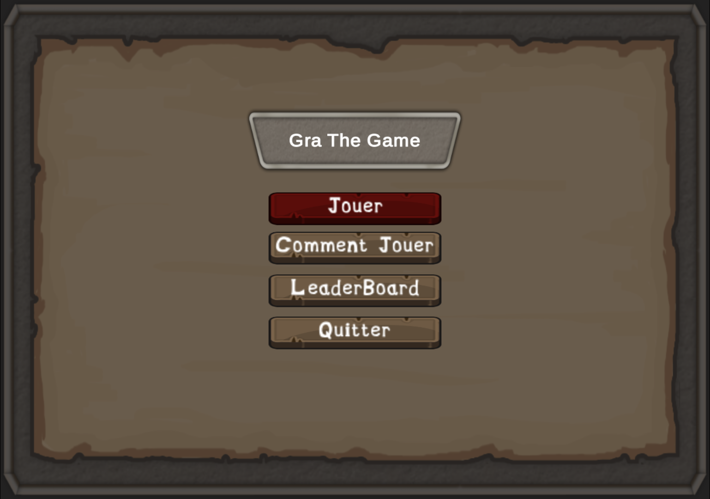
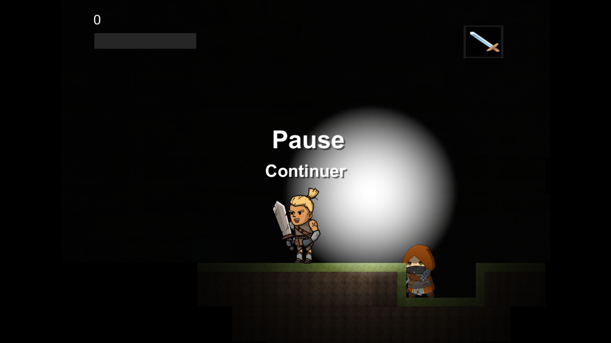
The code responsible for the random level generation is available to read
Cyber vs Steam is a text-based game created with the goal of developing a complete game from scratch in 24 hours using Java, to test what I was capable of doing with a language I had no prior experience with.
The concept is simple, as it is basically based on the board game Croque Carotte, with a few changes to make the game more interesting. It can be played by up to 4 players, with the goal of reaching the treasure.
The cyberpunk and steampunk theme was chosen afterwards, with the potential idea of creating a graphical version in the future.
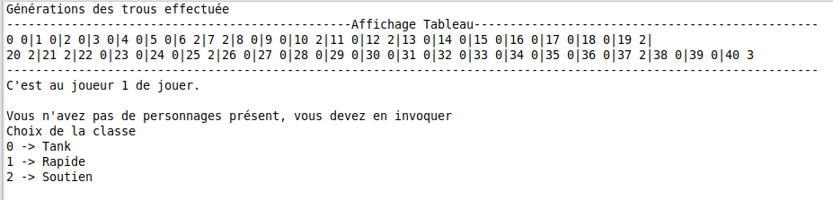
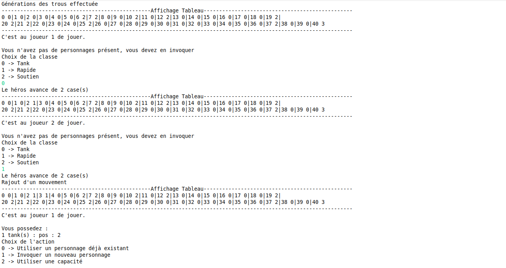
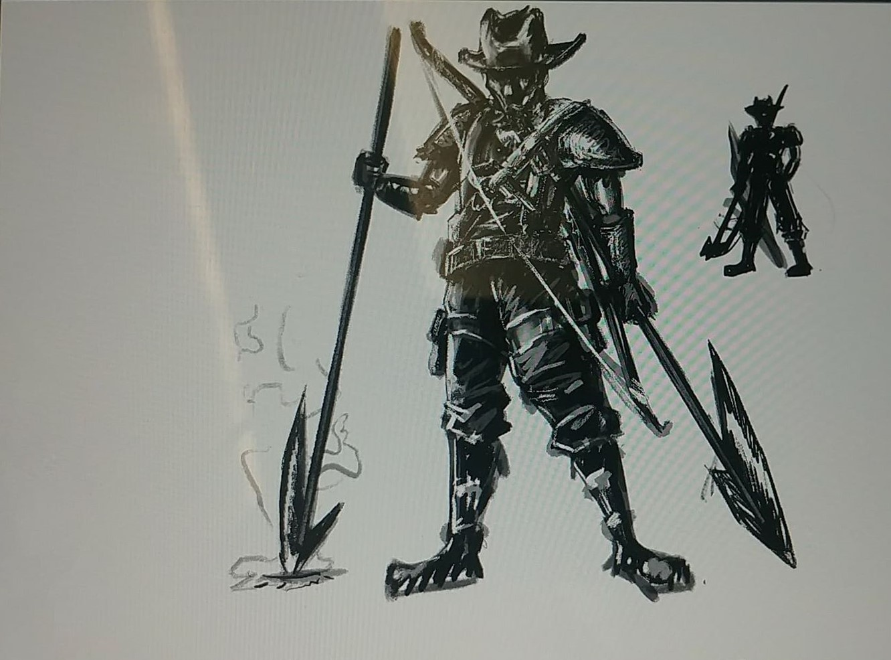
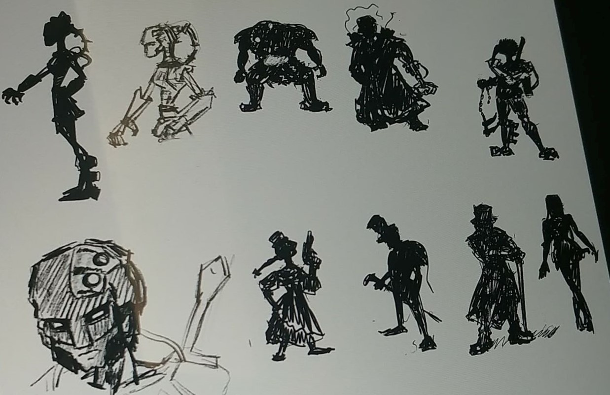
Undead is my second-year Bachelor’s final project. It is a puzzle game where the player must solve challenges by placing ghosts, vampires, and zombies on a board.
It is a recreation of the game created by Simon Tatham ,whose report can be downloaded here
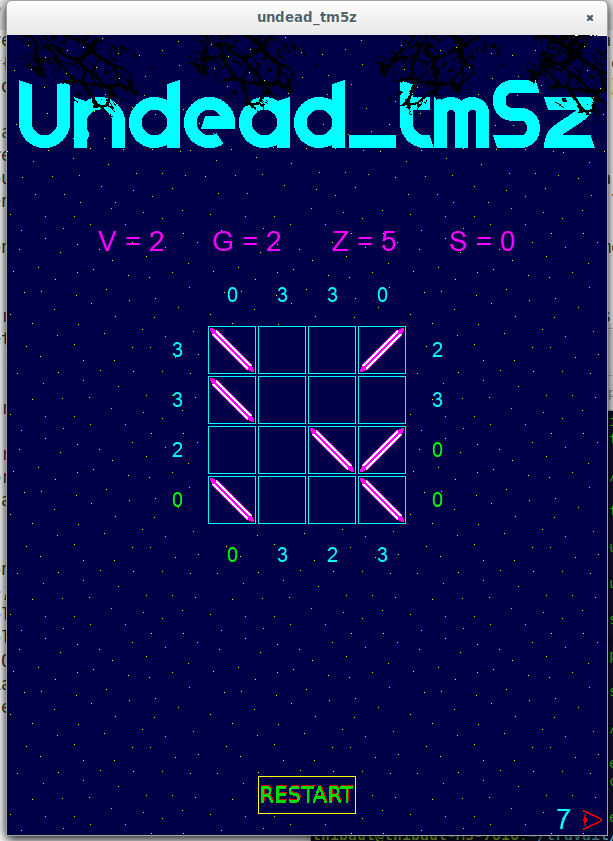
2048 is a small project that I supervised with high school people from my former school during my second year of university. It is the famous mobile game in a computer version, fully coded in Python 3.
My role in this project was to create a clean version that served as a reference for the students, helping them develop better games.
The game is available as a ZIP file via this link
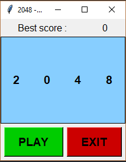
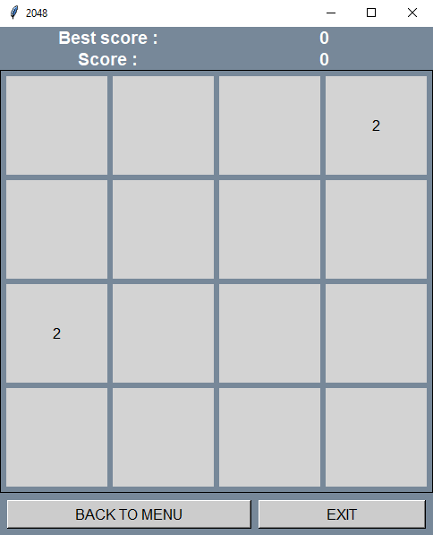
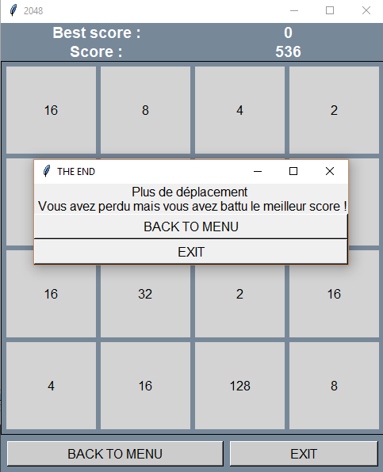
Knowledge to Escape is a game created during the 2018 Global Game Jam, whose theme was "Transmission." The player controls a small character who must escape from a laboratory.
Unfortunately, time is his enemy, and he is forced to respawn in his HUB every 30 seconds. To progress through the story, he must collect neurons scattered across the map to purchase abilities such as jumping, crouching, or even extending his free time outside the HUB. The game consists of two levels as well as a a unique sound atmosphere.
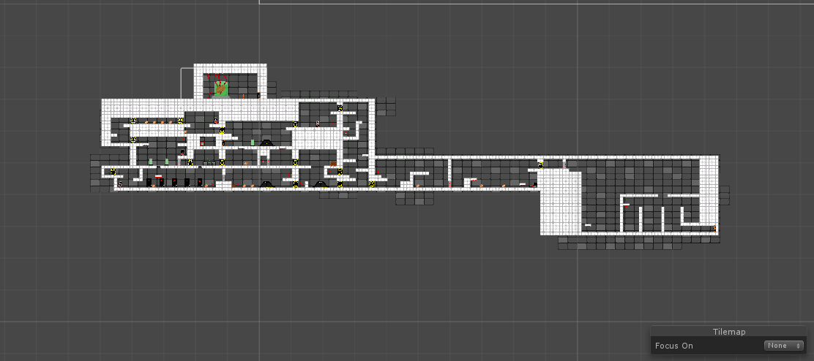
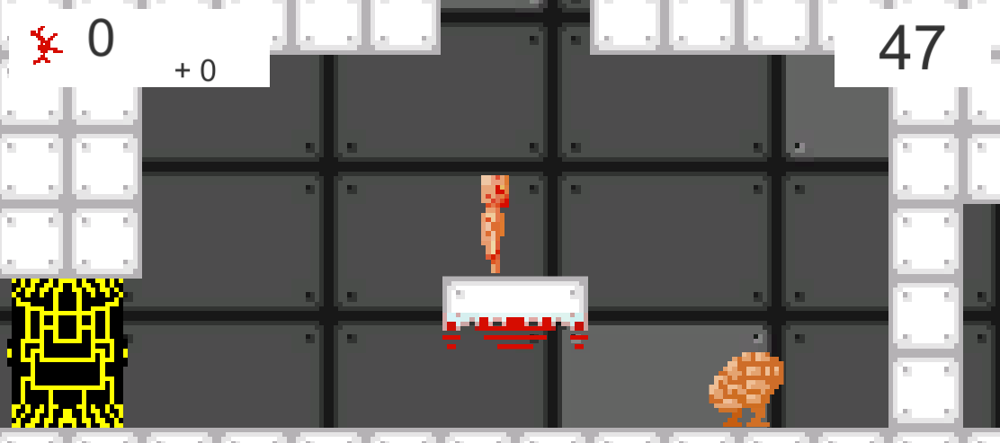
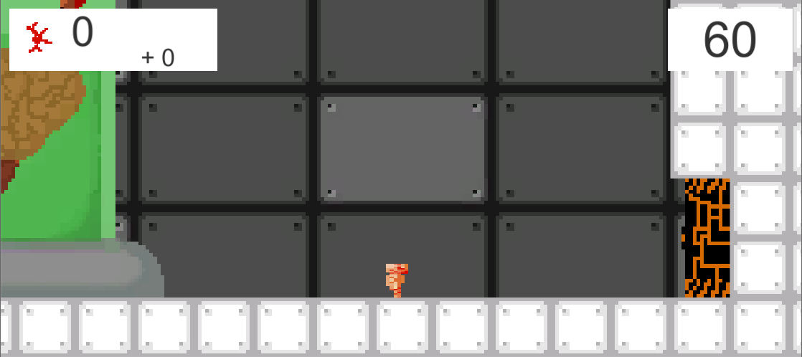
Pegguy is a 2D platformer created for a game design contest. The theme was "Label and the Beast." We decided to focus on the PEGI rating system, which classifies games based on their violence, imagery, etc. The game consists of several slices of Pegguy’s life at different ages, which the player will discover. The game is a caricature of PEGI ratings, always pushing the limits.
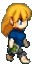
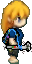
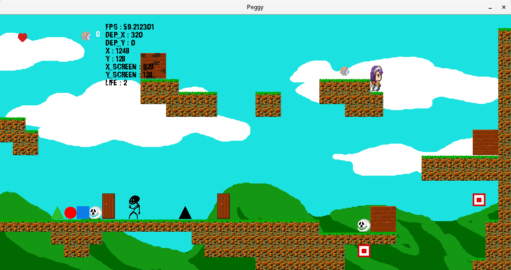
During my first year of a Computer Science degree, we had to create a turn-based RPG combat system.
I decided to build on the concept of Dungeons & Dragons, creating an entire adventure through a monster-filled dungeon in a text-based format.
The player can choose the number of heroes in their team from a selection of 17 different heroes.
Additionally, the game can be played PvP with a friend or allow the computer to play autonomously using an AI system.
Link to the Dungeons & Dragons PDF report here
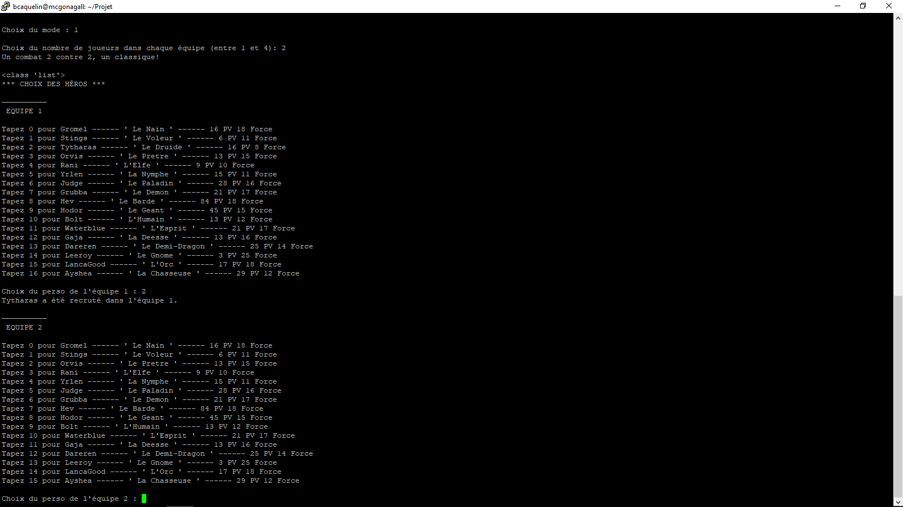
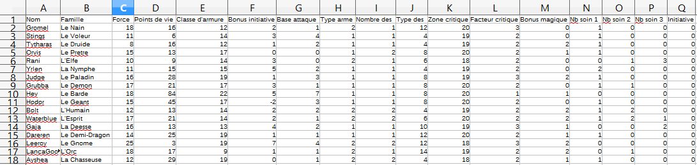
Password Secure is a mobile application I created for the baccalaureate.
In the ISN (Computer Science) specialization, we had to build a useful everyday-tool.
I therefore decided to create an app that randomly generates passwords based on a chosen difficulty level and the desired number of characters. These difficulty levels adjust the amount of special characters and whether uppercase letters are placed within the password.
Users can then access all saved and labeled passwords from a personal, secure area.
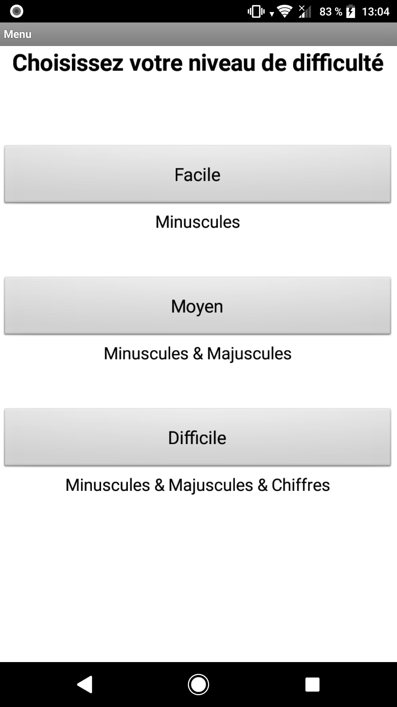
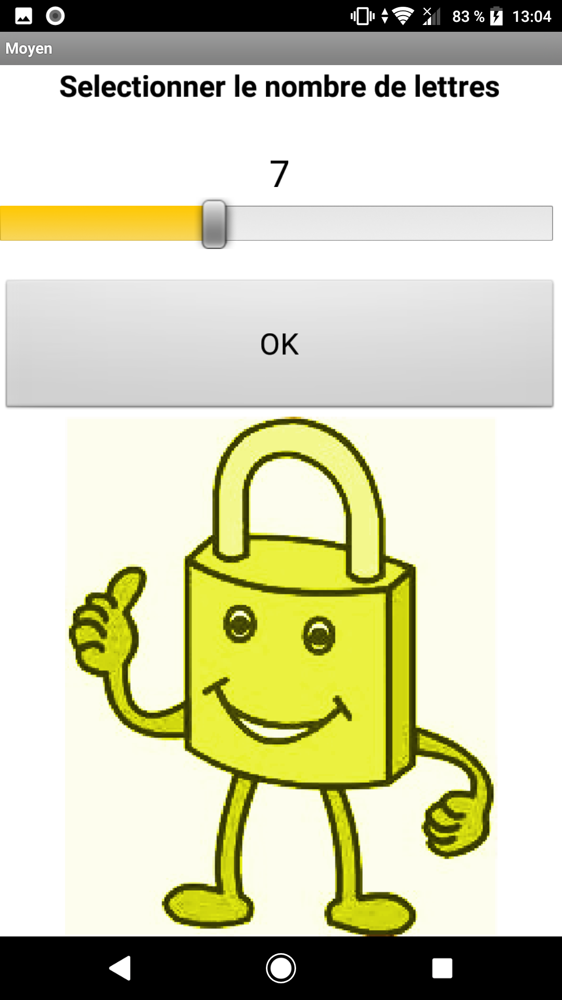
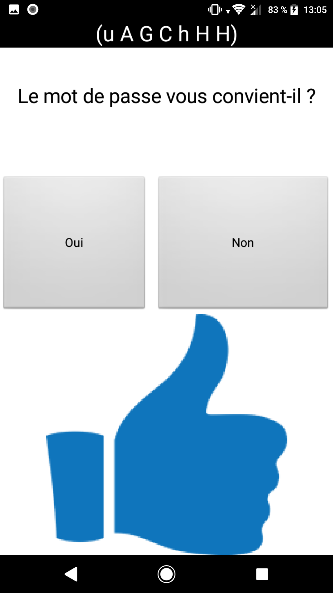
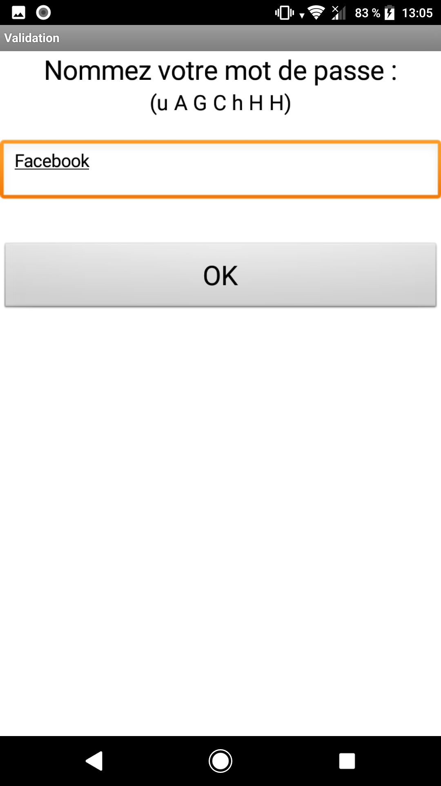